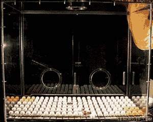
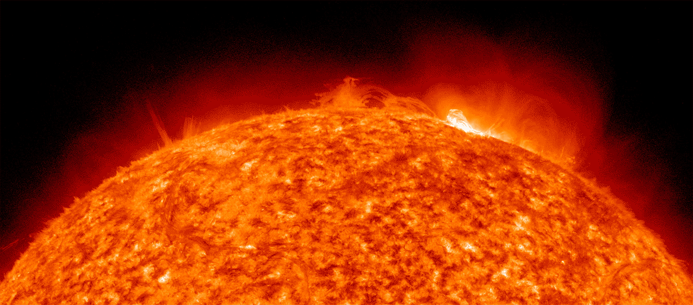
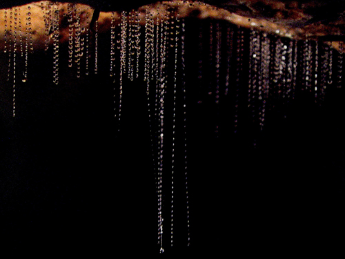
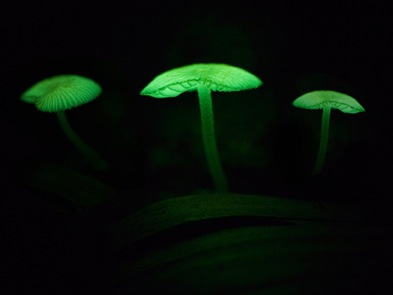
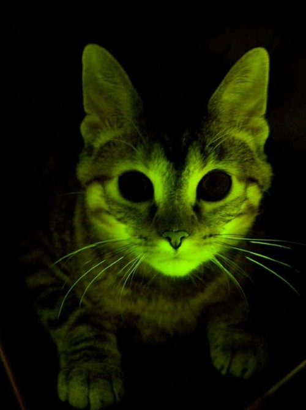

layout: false
class: center, middle, inverse
# Topic 1: What is light?
## Unit: Light and Optical Systems
### www.drpineda.ca
---
name: base
layout: true
---
# What is light?
## Light:
A form of energy that has no mass or volume.
## Natural light
Light from the Sun or fire. Energy emitted (given off) by the Sun is radiant energy (called radiation), which can travel through space since it does not need particles to transfer energy and radiates in all direction. Solar radiation is formed from nuclear fusion.
## Artificial light
Sources include lamps and bulbs, candles, matches
---
# Nuclear Fusion
The sun is hot because it is undergoing a continuous thermonuclear explosion. Sun is called because of a process called "nuclear fusion".


---
# Using Light
Since it is an energy, it can be transformed into other forms of energy like
- heat: absorbed by dark objects
- electrical energy: solar panels convert light into tiny amount of electricity on solar calculators or solar panels
- chemical energy: plants absorb light in chloroplasts for photosynthesis
The amount of light energy depends on intensity
---
# Sources of Light: Incandescent
If an object gets so hot it glows, it incandenscences. Ex) candle flame and light bulb
Most light bulbs have electricity flowing through a wire filament made of tungsten inside a glass bulb. The wire gets so hot, it glows. Electrical energy transforms into light energy and heat.
- About 95% of energy given off is heat (a real waste of energy)
- Incandescent bulbs are cheap, widely available, easy to use
---
# Sources of Light: Fluorescent
- Ultraviolet light is given off to be absorbed by particles in clothing, etc. and some are given off as fluorescent light
- Electrical energy is sent into a tube of mercury vapours, which makes them give off UV light.
- A phosphor coating inside the tube absorbs the UV light and starts to glow, giving us the visible light
- Fluorescent bulbs are expensive, long and sometimes awkward to use, and are difficult to dispose due to mercury inside and toxic phosphor coating
- Advantages include less energy wasted as heat (more energy efficient) and generally more longer lasting
---
# Phosphorescence
- Light is absorbed by certain particles and stored for a while. The light energy is later slowly released as visible light, even after the original light source is already gone.
- Fluorescence releases visible light right away. Ex) glow-in-the-dark stars, watches, clocks
---
# Chemiluminescence
Chemical reactions produces particles that give off visible light. Color depends on the chemical. Ex) glow sticks have a barrier that you break, starting the two chemicals inside to react
---
# Bioluminescence
Natural light produced by deep sea animals like jellyfish and angler fish to attract prey
Also seen in some fungi and fireflies to attract mates
---
class: inverse
background-image: url(images/fireflies.jpg)
# Bioluminescent Organisms: Fireflies
Despite their name, fireflies are actually beetles which use an enzymatic reaction involving a chemical compound called luciferin to produce their typical greenish flashing light. As well as possibly warning predators about their toxicity, it is thought the main purpose of their flashing abdomen is to attract mates.
---
# Bioluminescent Organisms: Glow Worms
Found on the walls of caves and in other dark damp places, New Zealand’s glow worms Arachnocampa luminosa are the larvae for the fungus gnat. They create snares of mucus to trap midges, and their glowing tail is to lure their prey into the sticky trap.

---
# Bioluminescent Organisms: Fungi
It’s not only animals that have evolved bioluminescence in their chemical toolkit. These mushrooms, found in tropical forests, are the fruiting body for Mycena chlorophos – one of over 70 identified species of glowing fungus. It is not known how or why these fungi emit light but it is thought that the light might attract nocturnal foraging animals to aid dispersal.

---
# Bioluminescent Organisms: Kitty
Thanks to the discovery of GFP, scientists have created new bioluminescent animals as part of their genetic research. This cat is resistant to feline HIV. Scientists inserted the jellyfish gene for GFP along with the gene for HIV resistance into a cat egg before it underwent IVF treatment. The offspring and their descendants glow under blue light, showing that both genes were successfully bred into the line of cats and that the properties of the HIV resistance gene can be tested.

---
# Bioluminescent Organisms: Jellyfish
In the wild these jellyfish, Aequorea victoria, are found in Puget Sound off the coast of Washington State, where bioluminescence researcher Osamu Shimomura was based. He started studying bioluminescence in 1961, which lead to the isolation of Green Fluorescent Protein (GFP) from these jellyfish. In 2008, Dr Shimomura shared the Nobel prize for chemistry with Martin Chalfie and Roger Tsien for isolating and developing GFP.
 ---
- Too much light in a city can cause light pollution, making it hard to see the stars
---
# Light pollution video
http://youtu.be/UdIGJNVUwmE
---
# Light pollution
Answer these questions using the light pollution video
---
# Dark Sky Reserves
http://youtu.be/ocjiOL_n5-E
---
- Too much light in a city can cause light pollution, making it hard to see the stars
---
# Light pollution video
http://youtu.be/UdIGJNVUwmE
---
# Light pollution
Answer these questions using the light pollution video
---
# Dark Sky Reserves
http://youtu.be/ocjiOL_n5-E